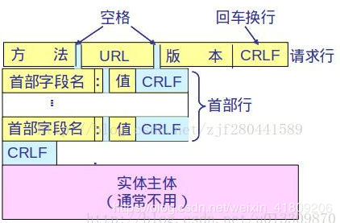
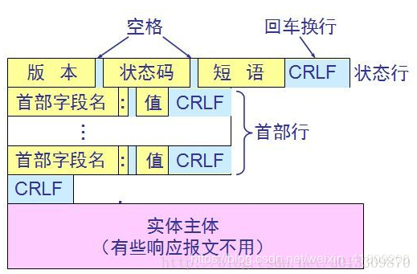

面试问题整理（一）
字节跳动
1. 什么是hashmap
hashmap就是存储键值对的一种散列结构，里面存储的实体包括Key，Value和一个指向自己的next指针
2. hashmap底层是怎么实现的
HashMap 底层是 hash 数组和单向链表实现，数组中的每个元素都是链表，由 Node 内部类（实现 Map.Entry<K,V>接口）实现，HashMap 通过 put & get 方法存储和获取。
存储对象时，将 K/V 键值传给 put() 方法：
① 调用 hash(K) 方法计算 K 的 hash 值，然后结合数组长度，计算得数组下标；
② 调整数组大小（当容器中的元素个数大于 capacity * loadfactor 时，容器会进行扩容resize 为 2n）；
③ 如果 K 的 hash 值在 HashMap 中不存在，则执行插入，若存在，则发生碰撞；如果 K 的 hash 值在 HashMap 中存在，且它们两者 equals 返回 true，则更新键值对； 如果 K 的 hash 值在 HashMap 中存在，且它们两者 equals 返回 false，则插入链表的尾部（JDK 1.7 之前使用头插法、JDK 1.8 使用尾插法）或者红黑树中（树的添加方式）。
注意：当碰撞导致链表大于 TREEIFY_THRESHOLD = 8 时，就把链表转换成红黑树
获取对象时，将 K 传给 get() 方法：
① 调用 hash(K) 方法（计算 K 的 hash 值）从而获取该键值所在链表的数组下标；
② 顺序遍历链表，equals()方法查找相同 Node 链表中 K 值对应的 V 值。
hashCode 是定位的，存储位置；equals是定性的，比较两者是否相等
3. hashmap冲突
hashmap有hash函数来计算存储位置，那就有可能两个对象经过hash函数计算出一个位置，这就是hash冲突，两个不同对象的hashcode相同，这种现象称为hash冲突。
4. hashmap冲突怎么解决
① 开放定址法：如果hash函数根据当前key值计算出的hashcode已经存在 p=hash（key），就根据当前算出的p再次hash得p1…直到计算出没有hash冲突的p。
② 再hash法：一个hashmap不光只有一个hash函数，当发生hash碰撞时，根据另外一个hash函数计算出另一个hashcode。
③ 链地址法：将所有哈希地址相同的都链接在同一个链表中 ，因而查找、插入和删除主要在同义词链中进行。链地址法适用于经常进行插入和删除的情况（hashmap采用这个方法来解决hash冲突）。
jdk1.7中直接采用链表，而jdk1.8中为链表的长度设置的定值，如果超过这个定值就是用红黑树来存值。
④ 建立一个公共缓冲区：一旦发生hash冲突时，将值存入这个公共缓冲区。
5. hash扩容
初始创建hashmap时，定义了hashmap的大小，而每一个初始的hashmap有一个扩容因子，默认是0.75。也就是说，当一个map填满了75%的bucket时候，和其它集合类(如ArrayList等)一样，将会重新调整map的大小（默认是进行二的次幂式扩大），并将原来的对象放入新的bucket数组中，这个过程叫作rehashing。但是每次rehash都会花费更多的时间，所以每次定义hashmap都应该考虑hashmap的大小，避免rehash的次数。因为它调用hash方法找到新的bucket位置。这个值只可能在两个地方，一个是原下标的位置，另一种是在下标为<原下标+原容量>的位置
6. hashmap为什么线程不安全以及不安全情况
感觉讲不明白，等看看hashmap源码再来优化讲一下吧
https://my.oschina.net/muziH/blog/1596801
7. http
http 和 https区别
① HTTP 是不安全的，而 HTTPS 是安全的
② HTTP 标准端口是80 ，而 HTTPS 的标准端口是443
③ 在OSI 网络模型中，HTTP工作于应用层，而HTTPS 的安全传输机制工作在传输层
④ HTTP 无法加密，而HTTPS 对传输的数据进行加密
⑤ HTTP无需证书，而HTTPS 需要CA机构wosign的颁发的SSL证书
什么是Http协议无状态协议？怎么解决Http协议无状态协议？
无状态协议对于事务处理没有记忆能力。也就是说，当客户端一次Http请求完成以后后，客户端再发送一次Http请求，Http并不知道当前客户端是一个“老用户”。
可以使用Cookie来解决无状态的问题，Cookie就相当于一个通行证，第一次访问的时候给客户端发送一个Cookie，当客户端再次来的时候，拿着Cookie(通行证)，那么服务器就知道这个是”老用户“。
一次完整的Http事务是怎么样的一个过程
域名解析 –> 发起TCP的3次握手 –> 建立TCP连接后发起http请求 –> 服务器响应http请求，浏览器得到html代码 –> 浏览器解析html代码，并请求html代码中的资源（如js、css、图片等） –> 浏览器对页面进行渲染呈现给用户
http的报文结构
① 请求报文—–从客户端向服务器发送请求报文。
请求报文的结构如下图：

② 响应报文—–从服务器到客户的回答。
响应报文的结构如下图：

http请求报文和响应报文都是由三个部分组成。可以看出这两种报文的区别就在于开始行不同。
① 开始行：用于区别是请求报文还是响应报文。在请求报文中的开始行叫做请求行，而在响应报文的开始行叫做状态行。
② 首部行：用于说明浏览器、服务器、或报文主体的一些信息。首部可以有好几行，单页可以不用。
③ 实体主体：在请求报文一般必用这个字段，在响应报文中返回请求的内容，也可以不用。
请求报文的第一行“请求行”只有三个内容，方法，请求资源的URL，以及Http的版本。这里的方法是对请求的对象进行的操作，这些方法实际上也就是一些命令。请求报文的类型就是由它采用的方法决定的。
8. get 和 post 比较
GET - 从指定的服务器中获取数据
POST - 提交数据给指定的服务器处理
GET方法：
使用GET方法时，查询字符串（键值对）被附加在URL地址后面一起发送到服务器：
特点：
① GET请求能够被缓存
② GET请求会保存在浏览器的浏览记录中
③ 以GET请求的URL能够保存为浏览器书签
④ GET请求有长度限制
⑤ GET请求主要用以获取数据
POST方法：
使用POST方法时，查询字符串在POST信息中单独存在，和HTTP请求一起发送到服务器：
特点：
① POST请求不能被缓存下来
② POST请求不会保存在浏览器浏览记录中
③ 以POST请求的URL无法保存为浏览器书签
④ POST请求没有长度限制